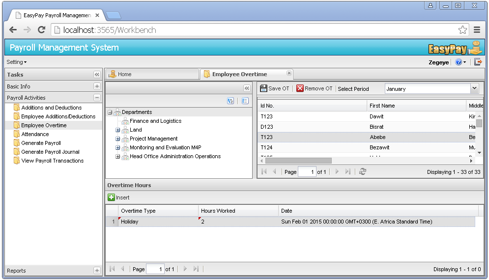

Managing Employee Overtime Hours (OT)
OT can be considered as the time worked beyond one's scheduled working hours, or is the compensation you normally earn for the extra work you perform.
Recording Employee OT Hours
Step 1:Click on the Payroll Activities menu -> Click on the Employee Overtime sub menu. Then a new page that shows Employee overtime hours will be displayed.
Step 2: Select one employee from the top grid.
Step 3: Select Period from the upper menu bar of the employees panel. Then available OT hours for the selected payroll and employee will be displayed on the bottom grid.
Step 4: Click on the Approve OT hour button located at the top left corner of the employees panel.
